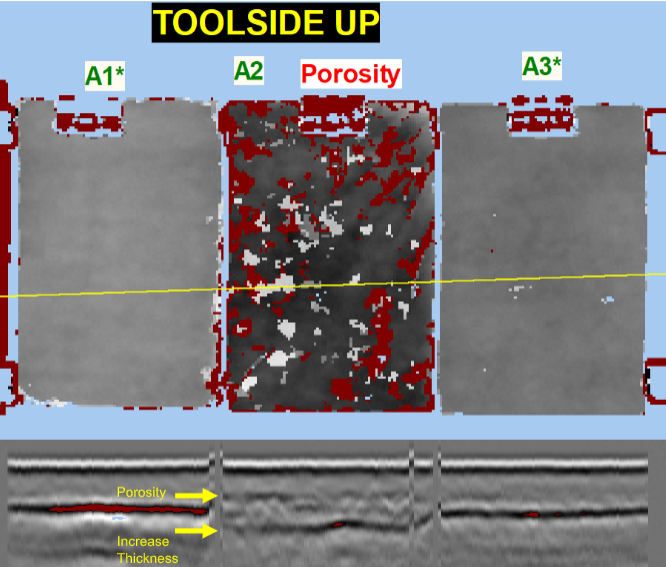

Back to Projects
Ultrasonic Inspection of Composites
Overview
- Collaborated with Boeing Aerostructures Australia to conduct full-immersion ultrasonic NDT of composite panels
- Used type A and C ultrasonic techniques capable of detecting delaminations and porosity
- Identified several manufacturing methods to be validated, and used test results to identify areas for improvement



My Role
- Wrote manufacturing documentation for various composite manufacturing methods such as resin infusions and wet lay-up
- Identified key steps requiring in-process quality assurance measures, such as photo documentation
- Gained first-hand experience with various NDT techniques and their applications in composite manufacturing
- Led team to write test report and key learnings in order to improve future manufacturing processes
Results & Impact
- Validated resin infusion as a reliable manufacturing method for composite panels
- Identified challenges in achieving even compression on lay-up samples, especially on complex geometries
- Currently in discussions with university staff to further develop in-house NDT capabilities
- Wrote test report identifying key learnings and recommendations for future composite manufacturing